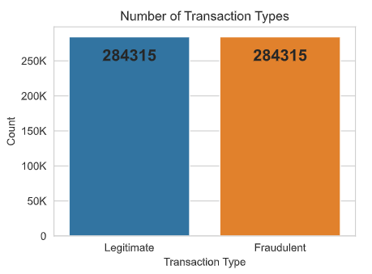
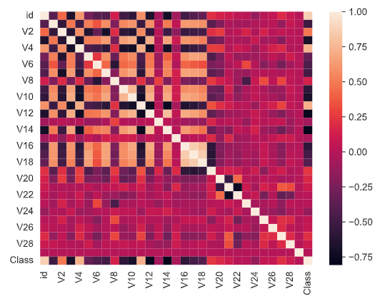
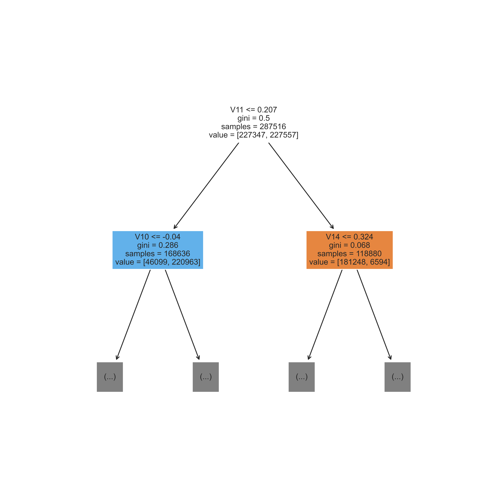
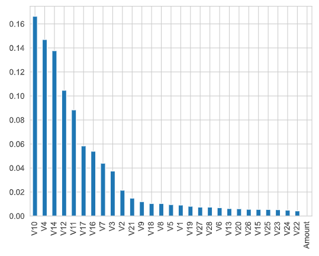
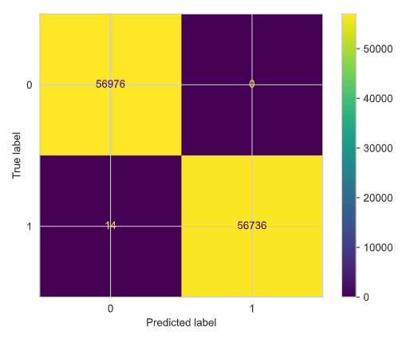

Detecting Fraud in Credit Card Transactions
In an era where digital commerce has become an integral part of our daily lives, the convenience of the credit card is undeniable. But with this convenience comes a dark and lurking threat: credit card fraud. As the world of financial transactions continues to evolve, so too do the methods employed by cybercriminals to exploit it. The battle between financial institutions and fraudsters is relentless, with billions of dollars at stake. In this digital cat-and-mouse game, data scientists and machine learning wizards have emerged as the unsung heroes, harnessing the power of algorithms and analytics to protect us from the ever-evolving threat of credit card fraud. Join me on my journey through the fascinating realm of analyzing real world credit card transactions, as I attempt to spot fraudulent activities. Get ready to dive deep into the data, uncover the patterns, and unlock the secrets of the financial world's most intricate puzzle.
The data I will be analyzing comprises over 550,000 transactions collected from European cardholders during 2023. For anyone interested, the dataset can be found right here. Let's dig in, shall we? First, the target. The point of this project is to determine whether a certain transaction is fraudulent or not, so each data point is labeled as 1 (fraudulent) or as 0 (not fraudulent) in the 'Class' column. It's pretty simple, thankfully. Now, onto the bulk of this project, the features. There are 30 included in this dataset. First, an 'id' column assigns a unique identifier to each transaction. This column does not provide any useful information, so we will drop it during our data cleaning. The second noteworthy feature is the 'Amount' column, which coincidentally holds the amount transferred during each activity.
Finally, we have the columns V1 through V28. These features hold information like the time or location but have been anonymized to ensure privacy and compliance with ethical guidelines. While this does make it a lot harder to look beneath the hood of our machine, I felt the trade-off was worth it. The removal of sensitive information was well worth the opportunity to work with real customer data. This extra anonymization step would be highly recommended, if not required, in real-world applications to ensure the privacy and security of customers. All incoming data can be run through the pipeline in real-time and then fed into the model. Only if the transaction was flagged as potentially fraudulent would the process need to be reversed, or the original data looked up.
Now that we have a general idea of the variables we will be looking at, let's take a closer look at our data. I started by calling the pandas function describe(), which provides a thorough statistical analysis of our dataframe. The only interesting aspect I found was that our V1 through V28 columns all have a standard deviation of 1, clearly a result of the anonymization process. There are no null or mismatched values either. I also looked at the number of occurrences of each transaction type, which can be seen below. There are exactly 284,315 transactions of each type, giving us a perfectly balanced dataset. This is an important aspect to consider, as not all classification algorithms can handle unbalanced data. Since this data is as balanced as can be, we have no restrictions on the algorithm we use. 
Next, I created a correlation matrix. This is a common technique used to determine if any two features have a high correlation with each other. We check for this condition because highly correlated features add complexity without adding new information. The machine learning model has another variable to look at, which exponentially increases the number of patterns it needs to check, without adding value. If two features are highly correlated, one feature can pretty accurately predict what the other will contain, which is not useful for finding meaningful patterns. Also of note, some models have trouble when two or more features are highly correlated. Below is the correlation matrix for our credit card data. While there is some correlation in the V1 through V18 features, nothing quite reaches the recommended threshold for removal. 
It seems like the data has been thoroughly cleaned and vetted already. I only need to make two small changes. First, I'm dropping the 'id' column, as I discussed before. I'm also changing the labels in the 'Class' column from 0 and 1 to 'Legitimate' and 'Fraudulent'. (Now I can stop checking the documentation over and over.) We have one last step before we get to train a machine learning model! We need to split our data into the training set (which the model uses to learn which parameters to use) and the testing set (which we use to determine how well the model has learned). Thanks to scikit-learn, this process is quite easy. Now we have our two sets, with 80% belonging to training and 20% belonging to testing.
We can finally get to the fun part! I've chosen to solve this binary classification problem with a Random Forest Classifier. Random Forests are an ensemble machine learning model created by building a collection of smaller decision trees and letting them vote on the answer. Random Forests are excellent models, as their ensemble nature reduces the risk of overfitting, a common issue with single Decision Trees. After training the model, I extracted one tree so that I could get a small sense of what it was doing. Due to the tree's many layers, I was only able to display the first two! This still provides a good impression of what a decision tree does. Based on a specific condition, the dataset is split into two. This process continues until the tree reaches a leaf node or the end of a branch. At that point, the tree can predict which class the data point belongs to. 
Now that we've built our model, it's time to test it. Do you remember how we split our dataset earlier? We can bring that back into play by comparing how well our model predicts the class of each data point to the real answer. When we do that, we see an accuracy of 99.988%. This is an amazing result! To gain another sense of what is happening, we can plot the 'importance' of each feature, averaged across every decision tree. Despite not knowing what each feature corresponds to, we can clearly see that V10, V4, and V14 had the most significant impact on the forest. 
Conversely, the 'Amount' feature has very little, if any, effect on the forest. I tried retraining the model after removing said feature, but the accuracy changed from 99.988% to 99.986%. This is a drop in accuracy, however minimal, so we will keep the 'Amount' feature moving forward. The last step of this project involves a more detailed examination of the results of our model. For that purpose, I created a confusion matrix. This graph displays the number of accurate and inaccurate predictions. From this graph, we can plot accuracy (99.988%), precision (99.975%), and recall (100.0%). I am extremely pleased with these results. Our model does have 14 cases where it predicted a legitimate transaction instead of correctly indenitifying it as fraudulent. It will be worth looking into why this occurs at a later point. 
Impact:
The impact of this research is of vital importance to the financial security of institutions and customers alike. Real-time, accurate fraud detection protects individuals from potential financial loss and also shields financial institutions from billions of dollars in damages. Moreover, it showcases the power of data science and machine learning in mitigating evolving cyber threats. By understanding the patterns of fraudulent transactions, we not only strengthen our financial systems but also reinforce trust in digital commerce. This research serves as a frontline defense in a high-stakes game, ensuring the continued reliability of our financial transactions and the security of our financial well-being. One day, I hope to actively contribute to this fight.